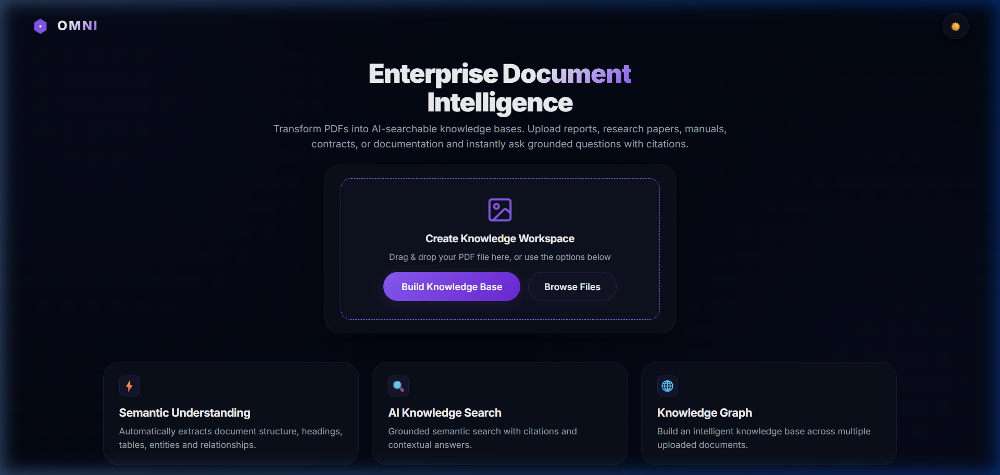
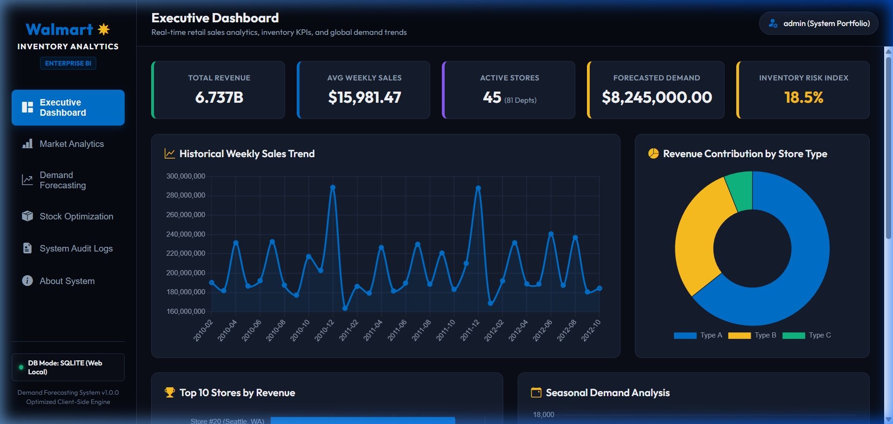
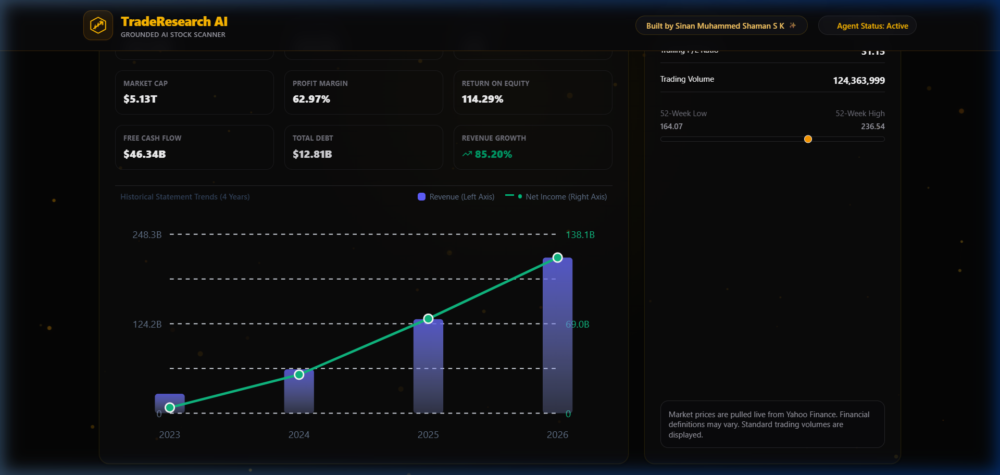
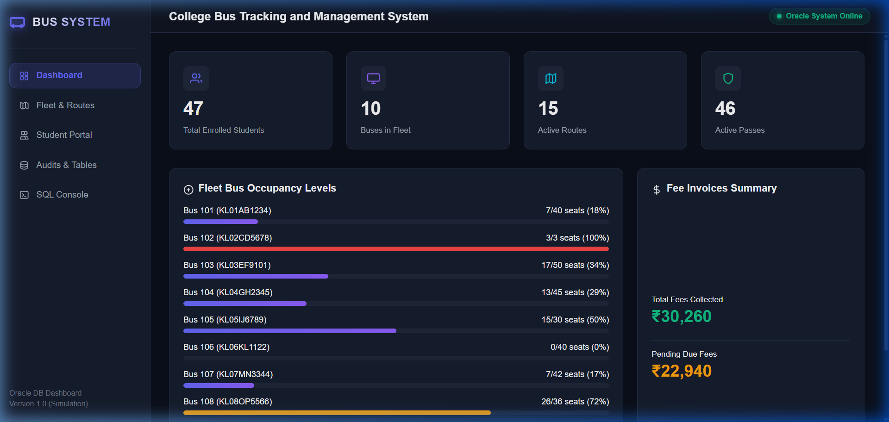
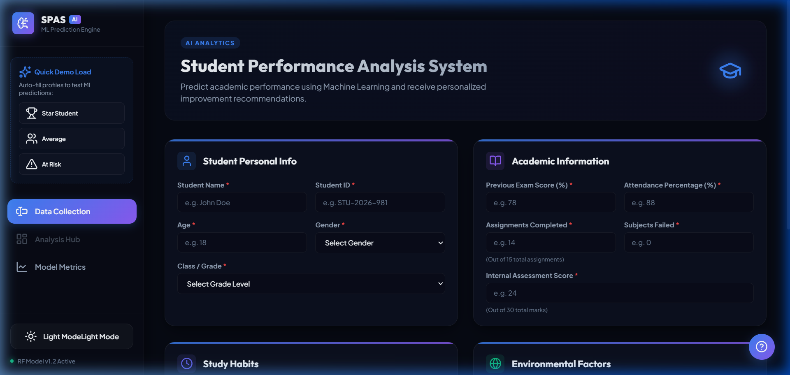
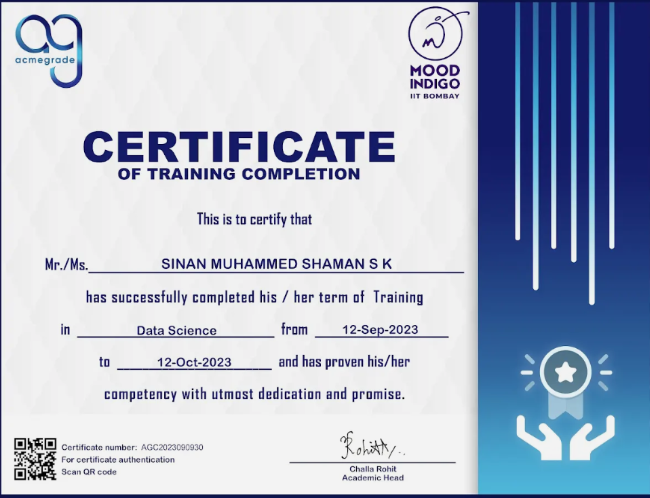

Neural Skill Constellation
Move cursor to navigate the interactive technology map. Tap core categories to reveal specialized frameworks.
Explore the AI Galaxy
Hover or tap on any core division node on the neural constellation map to reveal the specialized programming frameworks, tools, and algorithms integrated inside my portfolio.
Data Science & ML Projects

Enterprise AI PDF System (aipdfsystem)
- Built an enterprise-grade Retrieval-Augmented Generation (RAG) tool supporting multi-document ingestion and parsing.
- Designed visual AI processing steps tracking document loading, chunk embedding, and vector stores retrieval.
- Implemented dual-state AI assistants providing context-grounded responses and general conversation capability.
- Overhauled layout ergonomics to support fluid sidebar states, dark obsidian aesthetics, and sleek transitions.
- Python / RAG
- LangChain
- Vector Databases
- Aesthetics / UX

Inventory & Demand Forecasting Platform
- Developed a client-side forecast dashboard that processes pre-aggregated supply chain datasets with zero latency.
- Programmed statistical predictive algorithms including Moving Averages and Exponential Smoothing trends.
- Constructed visualizations for inventory monitoring, safety stock thresholds, and stock anomalies via Chart.js.
- Ensured offline capability by optimizing file parsing structure as client-side JavaScript calculations.
- JavaScript
- Chart.js
- Predictive Modeling
- Data Visualization

TradeResearchAI - Market Sentiment Engine
- Developed an AI-governed financial market research workspace harvesting live transcript feeds and corporate charts.
- Architected natural language processing (NLP) models to derive textual sentiment indices from corporate reports.
- Engineered prediction datasets matching market swings with sentiment trends to highlight buy/sell triggers.
- Styled interactive data matrices and responsive financial dashboards under a premium dark layout.
- Python (ML)
- NLP (Sentiment Analysis)
- Financial Modeling
- Vercel Deploy

College Bus Tracking & Management System
- Engineered a relational database design containing 8+ tables, cascading relationships, and audit sequences.
- Built an in-memory SQL execution sandbox in JavaScript supporting standard SELECT, INSERT, and DELETE statements.
- Simulated PL/SQL triggers managing student pass generation, renewal warnings, and distance-based fee structures.
- Developed a dark glassmorphic control pane displaying real-time transport stats, billing ledgers, and database tables.
- Oracle SQL
- PL/SQL Simulator
- Database Design
- JavaScript

SPAS - Student Performance Analysis System
- Trained supervised machine learning models utilizing linear and tree regression algorithms to predict student scores.
- Evaluated ML system accuracy by calculating performance metrics, achieving high R2 Score and validated MSE rates.
- Performed extensive exploratory data analysis (EDA) mapping data distributions, correlations, and feature weights.
- Integrated prediction utilities in the client interface to output real-time student performance projections.
- Machine Learning
- Scikit-Learn
- Regression
- Data Science
Training & Certifications
Professional Training
PL/SQL & Data Science Bootcamp
Jun 25 – Aug 25Successfully completed a 50-hour intensive bootcamp covering database programming and data science concepts. Developed hands-on experience in SQL and PL/SQL programming, including stored procedures, triggers, indexing, query optimization, and relational database design principles for structured data systems. Performed data preprocessing, exploratory data analysis (EDA), and implemented machine learning techniques.

Data Science Training Program
Sep 23 – Oct 23Completed a 4-week training program focused on AI and Machine Learning fundamentals and real-world problem-solving. Explored core machine learning concepts, emerging technologies, and practical industry use cases across domains. Participated in 12 guided learning sessions and hands-on technical activities as part of the structured skilling program.

Certifications

Generative AI Workshop
upGrad • Jul 26Generative AI
Participant in upGrad workshop exploring Large Language Models, prompt crafting, and context retrieval applications.

Python Hands-on Training
IIT Roorkee • Sep 24Python Programming
Hands-on Python training organized by iHUB DivyaSampark, IIT Roorkee. Covered core features and package handling.

Data Science Program
Acmegrade • Sep 23Data Science & ML
Completed technical sessions on predictive datasets, regression modeling, and SQL database interactions.

ML Micro-learning
Board Infinity • Nov 23Machine Learning Track
Fundamental certification highlighting statistical analytics workflows using Python tools.
Academic Transit Route
Hover or tap stations on the academic metro rail to trace educational nodes and GPA scores.
Transit Control Deck
System online. Tap any station indicator above to synchronize academic transcripts, timeframe metrics, and global scores.
Secure Transmission Node
Establish a direct data connection with Sinan's terminal core.